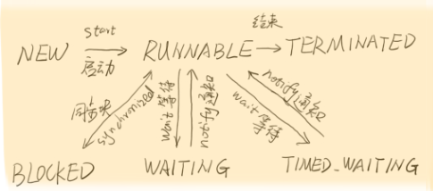
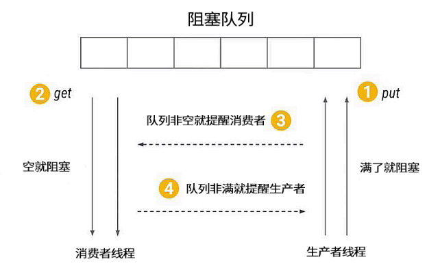
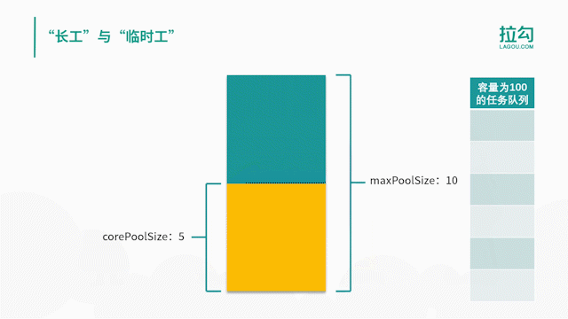

- Android
- 多线程
概念
同步与异步
同步和异步通常用来形容一次方法调用。同步方法调用一旦开始，调用者必须等到方法调用返回后，才能继续后续的行为。异步方法调用更像一个消息传递，一旦开始，方法调用就会立即返回，调用者就可以继续后续的操作
并发与并行
并行的多个任务是真的同时执行(多核多线程), 而对于并发来说，这个过程只是交替的，一会儿执行任务A，一会儿执行任务B，系统会不停地在两者之间切换。
临界区
临界区就是在同一时刻只能有一个任务访问的代码区。
synchronized(syncObject) {
//critical section
}
也可以用ReentrantLock来实现临界区
阻塞（Blocking）和非阻塞（Non-Blocking）
阻塞和非阻塞关注的是程序在等待调用结果（消息，返回值）时的状态. 阻塞调用是指调用结果返回之前，当前线程会被挂起。调用线程只有在得到结果之后才会返回。 非阻塞调用指在不能立刻得到结果之前，该调用不会阻塞当前线程。 你打电话问书店老板有没有《分布式系统》这本书，你如果是阻塞式调用，你会一直把自己“挂起”，直到得到这本书有没有的结果，如果是非阻塞式调用，你不管老板有没有告诉你，你自己先一边去玩了， 当然你也要偶尔过几分钟check一下老板有没有返回结果。在这里阻塞与非阻塞与是否同步异步无关。跟老板通过什么方式回答你结果无关。
死锁（Deadlock）、饥饿（Starvation）和活锁（Livelock）
可见性
可见性是指当一个线程修改了某一个共享变量的值时，其他线程是否能够立即知道这个修改。volatile关键字并不能真正保证线程安全。它只能确保一个线程修改了数据后，其他线程能够看到这个改动。但当两个线程同时修改某一个数据时，依然会产生冲突。
线程的生命周期
Thread中State枚举定义
public enum State{
NEW,
RUNNABLE,
BLOCKED,
WAITING,
TIME_WAITING,
TERMINATED
}

NEW状态表示刚刚创建的线程，这种线程还没开始执行。等到线程的start()方法调用时，才表示线程开始执行。当线程执行时，处于RUNNABLE状态，表示线程所需的一切资源都已经准备好了。如果线程在执行过程中遇到了synchronized同步块，就会进入BLOCKED阻塞状态，这时线程就会暂停执行，直到获得请求的锁。WAITING和TIMED_WAITING都表示等待状态，它们的区别是WAITING会进入一个无时间限制的等待，TIMED_WAITING会进行一个有时限的等待。那么等待的线程究竟在等什么呢？一般来说，WAITING的线程正是在等待一些特殊的事件。比如，通过wait()方法等待的线程在等待notify()方法，而通过join()方法等待的线程则会等待目标线程的终止。一旦等到了期望的事件，线程就会再次执行，进入RUNNABLE状态。当线程执行完毕后，则进入TERMINATED状态，表示结束。
创建线程的方式
- 可以继承Thread类
- 实现Runnable接口
线程终止
一般来说，线程执行完毕就会结束，无须手工关闭。 stop()方法过于暴力，强行把执行到一半的线程终止，可能会引起一些数据不一致的问题。 Thread.stop()方法在结束线程时，会直接终止线程，并立即释放这个线程所持有的锁，而这些锁恰恰是用来维持对象一致性的。如果此时，写线程写入数据正写到一半，并强行终止，那么对象就会被写坏，同时，由于锁已经被释放，另外一个等待该锁的读线程就顺理成章地读到了这个不一致的对象，悲剧也就此发生。
线程中断
在Java中，线程中断是一种重要的线程协作机制。使用stop方法终止线程是不安全的，官方也不推荐使用，我们可以根据线程的中断状态，自行处理中断逻辑。
// 它通知目标线程中断，也就是设置中断标志位
public void interrupt()
// 判断线程是否被标记为中断状态
public boolean isInterrupted()
// 判断是否被中断，并清除当前线程的中断状态
public static boolean interrupted()
wait与notify
// throws IllegalMonitorStateException
public final native void notify()
// throws InterruptedException, IllegalMonitorStateException
public final void wait() throws InterruptedException
wait和notify两个方法是Object的方法，不能直接调用这两个方法，你必须在调用前获取object的锁。
在线程A中，调用了obj.wait()方法，那么线程A就会停止继续执行，转为等待状态。等待到何时结束呢？线程A会一直等到其他线程调用了obj.notify()方法为止。这时，object对象俨然成了多个线程之间的有效通信手段。 如果一个线程调用了object.wait()方法，那么它就会进入object对象的等待队列。这个等待队列中，可能会有多个线程，因为系统运行多个线程同时等待某一个对象。当object.notify()方法被调用时，它就会从这个等待队列中随机选择一个线程，并将其唤醒。这里希望大家注意的是，这个选择是不公平的，并不是先等待的线程就会优先被选择，这个选择完全是随机的。
生产者与消费者 
class MyBlockingQueue {
private int maxSize;
private LinkedList<Object> storage;
public MyBlockingQueue(int size) {
this.maxSize = size;
storage = new LinkedList<>();
}
public synchronized void put() throws InterruptedException {
while (storage.size() == maxSize) {
wait();
}
storage.add(new Object());
notifyAll();
}
public synchronized void take() throws InterruptedException {
while (storage.size() == 0) {
wait();
}
System.out.println(storage.remove());
notifyAll();
}
}
wait()需要被包在while循环里多次判断wait的执行条件，在上面代码中阻塞队列为空时消费者执行wait操作，释放锁资源。
wait为什么需要包在while循环里多次判断条件？因为假如你不多次判断，而只判断一次的话会出现阻塞队列为空的时候，消费者去取数据。当有A，B两个消费者都在wait状态，此时生产者添加数据到队列执行notify唤醒消费者，消费者B获取到锁资源然后消费它执行notify，有可能唤醒消费者A执行消费操作就出错了，因为队列是没有数据的。所以执行wait之前需要多此判断条件。
join与yeild
// Thread.yield();
public static native void yield();
// join调用的是join(0)
public final void join() throws InterruptedException
public final synchronized void join(long millis)
throws InterruptedException
Thread.yield当前线程让出cpu，但要注意，让出CPU并不表示当前线程不执行了。当前线程在让出CPU后，还会进行CPU资源的争夺，但是是否能够再次被分配到就不一定了。如果你觉得一个线程不那么重要，或者优先级非常低，而且又害怕它会占用太多的CPU资源，那么可以在适当的时候调用Thread.yield()方法，给予其他重要线程更多的工作机会。 join是线程中的方法，查看源码得知它本质上时调用wait方法，比如在主线程中调用线程A的join方法，主线程是释放对象A的锁，然后主线程进入waitting状态，直到线程A执行完释放对象A的锁，主线程才有机会继续执行。
线程组
在java的多线程处理中有线程组ThreadGroup的概念，ThreadGroup是为了方便线程管理出现了，可以统一设定线程组的一些属性，比如setDaemon，设置未处理异常的处理方法，设置统一的安全策略等等；也可以通过线程组方便的获得线程的一些信息。 每一个ThreadGroup都可以包含一组的子线程和一组子线程组，在一个进程中线程组是以树形的方式存在，通常情况下根线程组是system线程组。system线程组下是main线程组，默认情况下第一级应用自己的线程组是通过main线程组创建出来的。
守护线程
线程优先级
线程可以有自己的优先级。优先级高的线程在竞争资源时会更有优势，更可能抢占资源。 在Java中，使用1到10表示线程优先级，数字越大则优先级越高。
/**
* The minimum priority that a thread can have.
*/
public final static int MIN_PRIORITY = 1;
/**
* The default priority that is assigned to a thread.
*/
public final static int NORM_PRIORITY = 5;
/**
* The maximum priority that a thread can have.
*/
public final static int MAX_PRIORITY = 10;
重入锁ReentrantLock
重入锁使用ReentrantLock类来实现,可以完全替代关键字synchronized，在JDK 5.0的早期版本中，重入锁的性能远远优于关键字synchronized，但从JDK 6.0开始，JDK在关键字synchronized上做了大量的优化，使得两者的性能差距并不大。开发人员必须手动指定何时加锁，何时释放锁。也正因为这样，重入锁对逻辑控制的灵活性要远远优于关键字synchronized。
// 获得锁，如果锁已经被占用，则等待
lock()：
// 获得锁，但优先响应中断
lockInterruptibly()：
// 尝试获得锁，如果成功，则返回true，失败返回false。该方法不等待，立即返回
tryLock()：
//在给定时间内尝试获得锁
tryLock(long time, TimeUnit unit)：
//释放锁
unlock()：
class X {
private final ReentrantLock lock = new ReentrantLock();
// ...
public void m() {
lock.lock(); // block until condition holds
try {
// ... method body
} finally {
lock.unlock();
}
}
}}
lock.lock(); // block until condition holds
lock.lock();
try {
// ... method body
} finally {
lock.unlock();
lock.unlock();
}
同一个线程多次获得锁，那么在释放锁的时候，也必须释放相同次数。如果释放锁的次数多了，那么会得到一个java.lang.IllegalMonitorStateException异常，反之，如果释放锁的次数少了，那么相当于线程还持有这个锁，因此，其他线程也无法进入临界区。
公平锁
ReentrantLock fairLock = new ReentrantLock(true) 构造函数中的参数设置为true
/**
* 公平锁Demo
*/
class ReentrantLockDemo implements Runnable {
public static ReentrantLock fairLock = new ReentrantLock(true);
@Override
public void run() {
while (true) {
try {
fairLock.lock();
try {
Thread.sleep(1000L);
} catch (InterruptedException e) {
e.printStackTrace();
}
System.out.println(Thread.currentThread().getName()+" 获到锁");
}finally{
fairLock.unlock();
}
}
}
public static void main(String[] args) {
ReentrantLockDemo reentrantLockDemo = new ReentrantLockDemo();
Thread t1 = new Thread(reentrantLockDemo,"t1");
Thread t2 = new Thread(reentrantLockDemo,"t2");
t1.start();
t2.start();
}
}
运行结果如下：
t1 获到锁
t2 获到锁
t1 获到锁
t2 获到锁
...
````
可以看到在公平锁下线程交替获取到锁，显得很公平
ReentrantLock.lock和ReentrantLock.unlock类似于synchronized作用。
### Condition使用
>它与wait()方法和notify()方法的作用是大致相同的。但是wait()方法和notify()方法是与synchronized关键字合作使用的，而Condition是与重入锁相关联的。通过lock接口（重入锁就实现了这一接口）的Condition newCondition()方法可以生成一个与当前重入锁绑定的Condition实例。利用Condition对象，我们就可以让线程在合适的时间等待，或者在某一个特定的时刻得到通知，继续执行。
Condition有几个方法如下
1. await()方法会使当前线程等待，同时释放当前锁，当其他线程中使用signal()方法或者signalAll()方法时，线程会重新获得锁并继续执行。或者当线程被中断时，也能跳出等待。这和Object.wait()方法相似。
2. awaitUninterruptibly()方法与await()方法基本相同，但是它并不会在等待过程中响应中断。
3. singal()方法用于唤醒一个在等待中的线程，singalAll()方法会唤醒所有在等待中的线程。这和Obejct.notify()方法很类似。
## 线程池
为了避免系统频繁地创建和销毁线程，我们可以让创建的线程复用。
- 线程池的各个参数的含义
```java
// 初始化线程池
public ThreadPoolExecutor(
// 核心线程数 正式工数量
int corePoolSize,
// 最大线程数
int maximumPoolSize,
// 空闲线程存活的时间
long keepAliveTime,
// 存活时间的单位
TimeUnit unit,
// 用于存放任务的队列
BlockingQueue<Runnable> workQueue,
// 创建新线程的工厂
ThreadFactory threadFactory,
// 处理被拒绝的任务
RejectedExecutionHandler handler
)
corePoolSize 是核心线程数，也就是常驻线程池的线程数量，与它对应的是 maxPoolSize，表示线程池最大线程数量，当我们的任务特别多而 corePoolSize 核心线程数无法满足需求的时候，就会向线程池中增加线程，以便应对任务突增的情况。
 接下来，我们来具体看下这两个参数所代表的含义，以及线程池中创建线程的时机。如上图所示，当提交任务后，线程池首先会检查当前线程数，如果此时线程数小于核心线程数，比如最开始线程数量为 0，则新建线程并执行任务，随着任务的不断增加，线程数会逐渐增加并达到核心线程数，此时如果仍有任务被不断提交，就会被放入 workQueue 任务队列中，等待核心线程执行完当前任务后重新从 workQueue 中提取正在等待被执行的任务。
接下来，我们来具体看下这两个参数所代表的含义，以及线程池中创建线程的时机。如上图所示，当提交任务后，线程池首先会检查当前线程数，如果此时线程数小于核心线程数，比如最开始线程数量为 0，则新建线程并执行任务，随着任务的不断增加，线程数会逐渐增加并达到核心线程数，此时如果仍有任务被不断提交，就会被放入 workQueue 任务队列中，等待核心线程执行完当前任务后重新从 workQueue 中提取正在等待被执行的任务。
此时，假设我们的任务特别的多，已经达到了 workQueue 的容量上限，这时线程池就会启动后备力量，也就是 maxPoolSize 最大线程数，线程池会在 corePoolSize 核心线程数的基础上继续创建线程来执行任务，假设任务被不断提交，线程池会持续创建线程直到线程数达到 maxPoolSize 最大线程数，如果依然有任务被提交，这就超过了线程池的最大处理能力，这个时候线程池就会拒绝这些任务，我们可以看到实际上任务进来之后，线程池会逐一判断 corePoolSize 、workQueue 、maxPoolSize ，如果依然不能满足需求，则会拒绝任务。

- 线程池的阻塞队列 线程池中的这四个主要组成部分最值得我们关注的就是阻塞队列了，如表格所示，不同的线程池会选用不同的阻塞队列。

表格左侧是线程池，右侧为它们对应的阻塞队列，你可以看到 5 种线程池对应了 3 种阻塞队列，我们接下来对它们进行逐一的介绍。
LinkedBlockingQueue 对于 FixedThreadPool 和 SingleThreadExector 而言，它们使用的阻塞队列是容量为 Integer.MAX_VALUE 的 LinkedBlockingQueue，可以认为是无界队列。由于 FixedThreadPool 线程池的线程数是固定的，所以没有办法增加特别多的线程来处理任务，这时就需要 LinkedBlockingQueue 这样一个没有容量限制的阻塞队列来存放任务。这里需要注意，由于线程池的任务队列永远不会放满，所以线程池只会创建核心线程数量的线程，所以此时的最大线程数对线程池来说没有意义，因为并不会触发生成多于核心线程数的线程。
SynchronousQueue 第二种阻塞队列是 SynchronousQueue，对应的线程池是 CachedThreadPool。线程池 CachedThreadPool 的最大线程数是 Integer 的最大值，可以理解为线程数是可以无限扩展的。CachedThreadPool 和上一种线程池 FixedThreadPool 的情况恰恰相反，FixedThreadPool 的情况是阻塞队列的容量是无限的，而这里 CachedThreadPool 是线程数可以无限扩展，所以 CachedThreadPool 线程池并不需要一个任务队列来存储任务，因为一旦有任务被提交就直接转发给线程或者创建新线程来执行，而不需要另外保存它们。
我们自己创建使用 SynchronousQueue 的线程池时，如果不希望任务被拒绝，那么就需要注意设置最大线程数要尽可能大一些，以免发生任务数大于最大线程数时，没办法把任务放到队列中也没有足够线程来执行任务的情况。
DelayedWorkQueue 第三种阻塞队列是DelayedWorkQueue，它对应的线程池分别是 ScheduledThreadPool 和 SingleThreadScheduledExecutor，这两种线程池的最大特点就是可以延迟执行任务，比如说一定时间后执行任务或是每隔一定的时间执行一次任务。DelayedWorkQueue 的特点是内部元素并不是按照放入的时间排序，而是会按照延迟的时间长短对任务进行排序，内部采用的是“堆”的数据结构。之所以线程池 ScheduledThreadPool 和 SingleThreadScheduledExecutor 选择 DelayedWorkQueue，是因为它们本身正是基于时间执行任务的，而延迟队列正好可以把任务按时间进行排序，方便任务的执行。
volatile
保证可见性，不保证原子性
- volatile 和 synchronized 的关系
相似性：volatile 可以看作是一个轻量版的 synchronized，比如一个共享变量如果自始至终只被各个线程赋值和读取，而没有其他操作的话，那么就可以用 volatile 来代替 synchronized 或者代替原子变量，足以保证线程安全。实际上，对 volatile 字段的每次读取或写入都类似于“半同步”——读取 volatile 与获取 synchronized 锁有相同的内存语义，而写入 volatile 与释放 synchronized 锁具有相同的语义。
不可代替：但是在更多的情况下，volatile 是不能代替 synchronized 的，volatile 并没有提供原子性和互斥性。
性能方面：volatile 属性的读写操作都是无锁的，正是因为无锁，所以不需要花费时间在获取锁和释放锁上，所以说它是高性能的，比 synchronized 性能更好。
参考链接
怎样理解阻塞非阻塞与同步异步的区别？ 并发之原子性、可见性、有序性 Java多线程之临界区、ThreadLocal 实战java高并发程序设计 Java并发编程：volatile关键字解析 Java多线程共享变量控制
JMM(java内存模型)
重排序，原子性，内存可见性
面试
- 实现runnable接口的3个好处
- Runnable 与 Thread 类的解耦，Runnable负责执行的内容，Thread 类负责线程启动和属性设置等内容，权责分明。
- Runnable可以结合线程池一起使用
- Java 语言不支持双继承，如果我们的类一旦继承了 Thread 类，那么它后续就没有办法再继承其他的类，这样一来，如果未来这个类需要继承其他类实现一些功能上的拓展，它就没有办法做到了，相当于限制了代码未来的可拓展性。
- volatile的适用场景